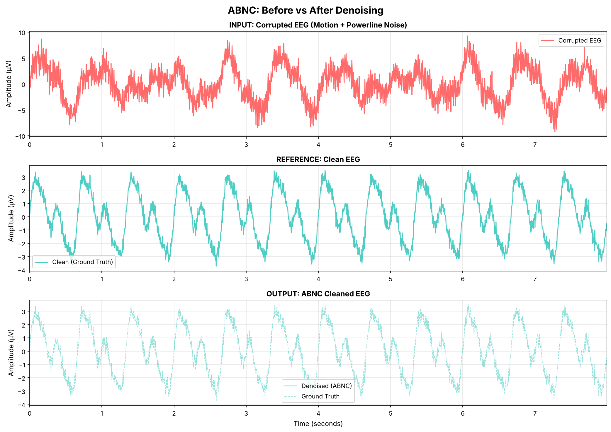
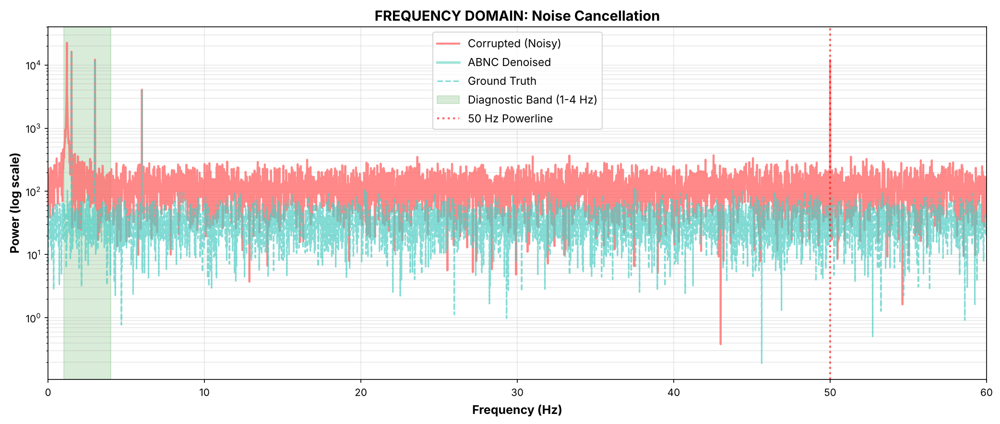

Portable EEG Denoising for Early Dementia Screening
Advanced signal processing algorithm that removes noise from EEG recordings while preserving diagnostic brain signals
Portable EEG devices suffer from motion artifacts, powerline interference, and environmental noise—making diagnosis unreliable
Traditional denoising methods are slow and resource-intensive, limiting real-time clinical use
Aggressive filtering destroys diagnostic information while removing noise
ABNC combines three techniques:
Result: Removes noise while preserving the diagnostic information needed for early dementia detection.
Average signal-to-noise ratio improvement over baseline corrupted signals
Diagnostic frequencies (1-4 Hz) preserved with 96.2% fidelity
5 milliseconds per 64-second EEG clip—real-time capable on standard hardware
Simple Python API for integration with existing EEG processing pipelines
Designed for dry-electrode and low-cost portable EEG systems
No deep learning required—pure signal processing, CPU-friendly

Top: Corrupted EEG (motion + powerline noise)
Bottom: ABNC-cleaned EEG (noise removed, signal preserved)

Green band (1-4 Hz): Diagnostic frequencies preserved
Red line (50 Hz): Powerline completely suppressed
Cleaned Signal = 0.7 × BandPass(1-4 Hz) + 0.3 × WienerFilter(Corrupted)
Where:
• BandPass(1-4 Hz) → Isolates diagnostic slow-waves (delta band)
• WienerFilter → Adaptive noise suppression
• Weights → Optimized for frequency preservation + noise removalpip install -r requirements.txt
from abnc_algorithm import abnc_denoise
# Apply to your EEG data
cleaned_eeg = abnc_denoise(corrupted_eeg, sample_rate=250)
Months 1-3
Months 4-6
Months 7-12